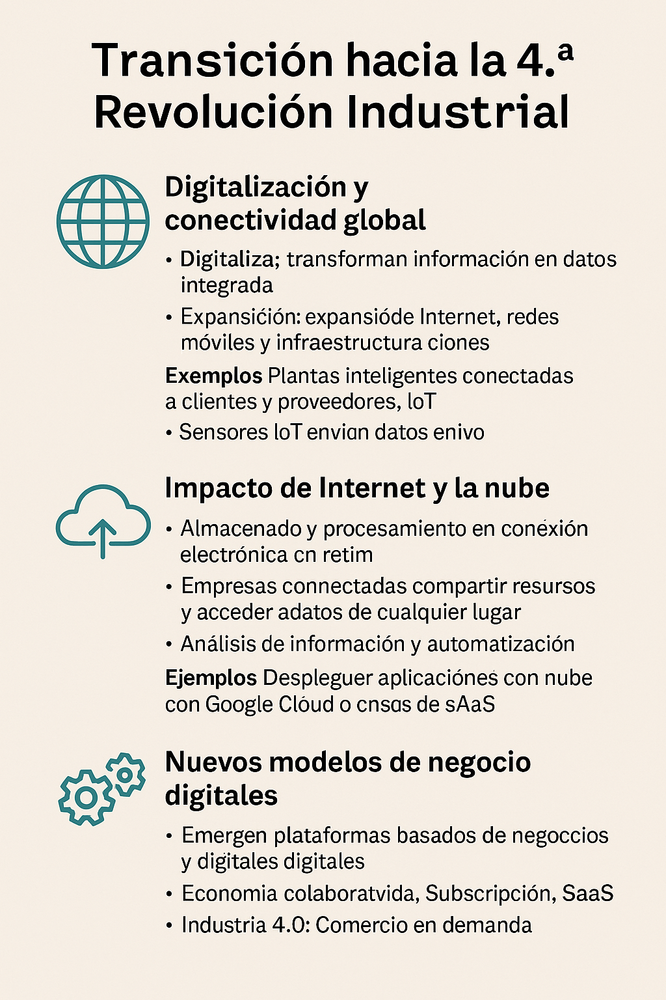

SESIÓN 1 — De la 1ª a la 4ª Revolución Industrial
Índice (Prepara tu Portfolio)
- Evolución histórica de las revoluciones industriales
- Transición hacia la 4.ª Revolución Industrial
- Sistemas ciberfísicos (CPS)
- Actividades
Objetivo: Comprender la evolución tecnológica y situar la Industria 4.0 en su contexto histórico.
Criterios vinculados: RA2.a
- Evolución histórica de las revoluciones industriales
- 1ª Revolución: mecanización y máquina de vapor
- 2ª Revolución: electricidad y producción en cadena
- 3ª Revolución: automatización e informática

🏭1. Evolución histórica de las revoluciones industriales
1. 1.ª Revolución Industrial: mecanización y máquina de vapor
Periodo: aprox. 1760–1840 , iniciada en Gran Bretaña .
Marca el paso de una economía agraria y artesanal a una economía industrial basada en máquinas .
- La 1.ª Revolución Industrial se caracterizó por la mecanización de los procesos productivos gracias al uso de la máquina de vapor , impulsada por la energía del carbón .
- La innovación de James Watt mejoró la eficiencia energética mediante un condensador separado , lo que permitió su uso masivo en fábricas y locomotoras.
- Nacieron las fábricas como centros de producción concentrada, sustituyendo el taller artesanal .
- Ejemplo destacado: la industria textil británica , donde la hiladora mecánica y el telar automático multiplicaron la producción.
- El transporte ferroviario con locomotoras de vapor facilitó la distribución rápida de materias primas y mercancías.
- Desde el punto de vista informático, se introdujo una automatización primitiva : máquinas que realizaban tareas repetitivas sin intervención humana directa, aunque aún sin control digital .
Referencias:
- Britannica – Steam Engine
- National Geographic – Industrial Revolution and Technology
- Pressbooks – The Industrial Revolutions
Ejemplo para clase:
Comparar un taller artesanal del siglo XVIII con una fábrica de vapor del XIX.
Analizar diferencias: energía , organización , escala y productividad .
Actividad:
🧩 “De la artesanía a la fábrica de vapor”
1️⃣ Dividir la clase en grupos y entregar imágenes (taller, fábrica, locomotora).
2️⃣ Cada grupo identifica la fuente de energía , la organización del trabajo y las ventajas o desventajas .
3️⃣ Exponer conclusiones y elaborar una línea del tiempo en la pizarra.
2. 2.ª Revolución Industrial: electricidad y producción en cadena
Periodo: aprox. 1870–1914 .
Supuso el salto de la energía del vapor a la electricidad y el inicio de la producción masiva .
- Se introdujo la energía eléctrica y el motor eléctrico , permitiendo mayor flexibilidad en las fábricas y una reducción de costes .
- La producción en cadena , impulsada por Henry Ford , permitió fabricar productos en serie , reduciendo tiempos y precios.
- Nuevas industrias: acero (proceso Bessemer ), petróleo , química , automóvil , telégrafo y teléfono .
- Surgen los conceptos de especialización del trabajo y economías de escala .
- Desde la óptica empresarial: mayor productividad y estandarización ; desde el punto de vista del cliente: productos más baratos , disponibles y uniformes .
Referencias:
- Fiveable – Second Industrial Revolution
- Swartz Engineering – Electricity and the Industrial Revolution
- Medium – Era of Mass Production
Ejemplo para clase:
Mostrar una línea de montaje de Ford (1913).
Debatir sobre cómo la electricidad y la organización en cadena transformaron la producción.
Actividad:
🧩 “Del vapor a la corriente eléctrica”
1️⃣ Analizar imágenes de fábricas con vapor y con electricidad.
2️⃣ Responder:
- ¿Qué fuente de energía se usa?
- ¿Cómo cambia la producción y la mano de obra?
- ¿Qué ventajas obtiene la empresa y el cliente?
3️⃣ Cada alumno escribe una frase sobre cómo la electricidad cambió la vida cotidiana.
3. 3.ª Revolución Industrial: automatización e informática
Periodo: desde los años 1950–1970 hasta finales del siglo XX.
Se inicia la era digital , con la llegada de la electrónica , los ordenadores y las telecomunicaciones .
- Introducción del microprocesador , los robots industriales y los sistemas de control .
- Nacen los PLC (Controladores Lógicos Programables) y la automatización industrial .
- Expansión de las redes de comunicación , Internet y sistemas de información .
- La informática y el software se integran en la producción (fábricas automatizadas).
- Se generaliza el uso de sensores , datos en tiempo real y control numérico por ordenador (CNC) .
- En el ámbito empresarial, mejora la eficiencia , la calidad , la trazabilidad y la personalización de productos.
Referencias:
- Humanidades.com – Third Industrial Revolution
- Tech-Labs – From Industry 1.0 to 4.0
- Medium – Inventions During Industrial Revolutions
🧩 Actividad: Moodle
MOODLE: COMPLETA LAS PALABRAS
Completa las palabras en Moodle y sube las capturas


“Del obrero al robot programado”
Analizar un vídeo de una fábrica automatizada con robots y sensores , destacando la relación entre software y parte física .
Actividad: “Del obrero al robot programado”
🧩 “Del obrero al robot programado”
1️⃣ Observar un vídeo o simulación de una planta automatizada.
2️⃣ En grupos, identificar los elementos tecnológicos presentes ( robots , PLCs , sensores , red ).
3️⃣ Debatir: ventajas, riesgos y cambios para el trabajador y el consumidor.
4️⃣ Cierre en Portfolio con una línea temporal conjunta (1750–2000) con los hitos principales.
📚 GLOSARIO DE TÉRMINOS CLAVE
| Término | Definición breve |
|---|---|
| Mecanización | Sustitución del trabajo manual por máquinas movidas por energía externa (vapor o motor). |
| Máquina de vapor | Dispositivo que convierte el vapor de agua en energía mecánica; base de la 1.ª Revolución Industrial. |
| Fábrica | Centro de producción donde se concentran trabajadores y maquinaria. |
| Electricidad | Fuente de energía limpia, flexible y fácilmente transportable que revolucionó la industria. |
| Producción en cadena | Sistema en el que cada trabajador o máquina realiza una tarea específica de forma repetitiva. |
| Estandarización | Fabricación de piezas idénticas e intercambiables para reducir costes y tiempos. |
| Microprocesador | Circuito integrado que ejecuta instrucciones; base de los ordenadores y la automatización. |
| Automatización | Uso de sistemas que realizan tareas sin intervención humana directa. |
| PLC (Controlador Lógico Programable) | Dispositivo electrónico que controla procesos industriales. |
| CNC (Control Numérico por Computadora) | Sistema que maneja máquinas-herramienta mediante instrucciones programadas. |
| Sensores | Dispositivos que detectan cambios físicos y envían información a sistemas de control. |
| Industria 3.0 | Etapa caracterizada por la integración de informática, electrónica y automatización. |
| Economías de escala | Ahorros de costes al aumentar el volumen de producción. |
| Línea de montaje | Organización del trabajo donde el producto pasa secuencialmente por diferentes estaciones. |
| Revolución Industrial | Conjunto de transformaciones tecnológicas, económicas y sociales derivadas de la mecanización. |
2 Transición hacia la 4.ª Revolución Industrial
1️⃣ Digitalización y conectividad global
La digitalización es el proceso mediante el cual la información, los procesos y los productos se transforman en datos digitales , lo que permite su almacenamiento , procesamiento y transmisión de manera eficiente.
- La conectividad global surge gracias al crecimiento de Internet , las redes móviles y las infraestructuras de comunicación internacionales.
- Esta conectividad permite la interconexión de dispositivos , personas y empresas a escala mundial, sentando las bases de la Industria 4.0 .
- Los datos se convierten en un recurso estratégico , esencial para la toma de decisiones en tiempo real.
Ejemplos:
- Plantas inteligentes conectadas con proveedores y clientes a través de la nube.
- Sensores IoT que envían datos en vivo sobre el rendimiento de una máquina desde cualquier parte del mundo.
- Comercio electrónico y plataformas globales como Amazon o Alibaba, que dependen de redes digitales integradas.
Referencias web:
- BBVA Aprendemos Juntos — Qué es la digitalización
- OECD — Digital Transformation and Connectivity
- Cisco — Global Connectivity Report
En clase:
💬 Comparar una empresa de los años 80 (sin internet) con una empresa actual (con nube, CRM y ERP).
Reflexionar: ¿qué tareas ahora se hacen digitalmente?
2️⃣ Impacto de Internet y la nube
Explicación:
- La nube (cloud computing) permite almacenar y procesar información sin necesidad de infraestructura física local.
- Gracias a Internet , las empresas pueden compartir recursos , colaborar y acceder a información en tiempo real desde cualquier lugar.
- Este modelo impulsa el concepto de empresa conectada , con plataformas globales , servicios SaaS (Software as a Service) y ciberseguridad avanzada .
- También favorece la analítica de datos , la inteligencia artificial y la automatización remota .
Ejemplos:
- Servicios como Google Cloud , AWS o Azure permiten desplegar aplicaciones empresariales en minutos.
- Herramientas como Odoo , Salesforce o Microsoft 365 son ejemplos de servicios cloud que integran gestión y comunicación.
- Empresas pequeñas acceden a infraestructura digital sin necesidad de comprar servidores.
Referencias web:
- IBM — Qué es la computación en la nube
- Google Cloud — Casos de éxito
- Red Hat — Cloud Computing Basics
En clase:
Cada grupo representa una pequeña empresa que decide “migrar a la nube” y deben elegir:
1️⃣ Qué servicios digitalizan (correo, documentos, CRM, copias de seguridad).
2️⃣ Qué ventajas y riesgos perciben.
3️⃣ Qué necesitarían para implementarlo.
3️⃣ Nuevos modelos de negocio digitales
La digitalización y la nube han impulsado modelos de negocio basados en datos y plataformas digitales .
- Surgen conceptos como:
- Economía colaborativa (Airbnb, Uber).
- Suscripción y SaaS (Netflix, Spotify, Odoo SaaS).
- Marketplace global (Amazon, eBay).
- Industria 4.0 : personalización, fabricación bajo demanda, mantenimiento predictivo.
- Las empresas utilizan la analítica de datos , la inteligencia artificial (IA) y el Big Data para anticipar comportamientos de los clientes.
- Esto genera un entorno más competitivo, interconectado y orientado al cliente .
Ejemplos:
- Tesla combina software, sensores y actualizaciones remotas para mejorar sus coches después de la venta.
- Netflix usa IA para personalizar contenidos a cada usuario.
- Fabricación bajo demanda (impresión 3D) permite producir solo cuando el cliente lo solicita.
Referencias web:
- Forbes — Modelos de negocio digitales
- Harvard Business Review — How Digital Platforms Work
- Odoo — Cloud ERP
En clase:
1️⃣ Grupos de 3 alumnos eligen una empresa tradicional (por ejemplo, una tienda o taller).
2️⃣ Rediseñan su modelo como empresa digital (por ejemplo, con venta online, CRM, marketing digital).
3️⃣ Presentan brevemente cómo mejoraría su competitividad gracias a la transformación digital.
🧩 Actividad: “De la fábrica al ecosistema digital”
1️⃣ Crear una línea temporal con las 4 revoluciones industriales.
2️⃣ En cada etapa, anotar los principales cambios tecnológicos y modelos de negocio .
📚 Glosario de términos clave
| Término | Definición breve |
|---|---|
| Digitalización | Conversión de información o procesos analógicos en formato digital. |
| Conectividad global | Capacidad de comunicación entre personas, empresas y dispositivos en todo el mundo. |
| Nube (Cloud Computing) | Servicio que permite almacenar y procesar datos a través de Internet. |
| SaaS (Software as a Service) | Modelo en el que el software se ofrece como servicio en la nube, sin instalación local. |
| Industria 4.0 | Nueva era industrial basada en IoT, automatización, datos y ciberfísica. |
| Economía colaborativa | Modelo donde los usuarios comparten recursos a través de plataformas digitales. |
| Big Data | Conjunto de datos masivos que requieren tecnologías avanzadas para su análisis. |
| Analítica de datos | Uso de técnicas estadísticas y algoritmos para extraer información útil. |
| Transformación digital | Proceso de cambio en las empresas para adaptarse al entorno digital. |
| Marketplace | Plataforma en línea que conecta compradores y vendedores. |

3 ⚙️ Sistemas ciberfísicos (CPS)
1️⃣ Definición y estructura (sensores, actuadores, software)
Los sistemas ciberfísicos (CPS) son sistemas en los que la parte física (máquinas, sensores, dispositivos) se integra estrechamente con la parte digital (software, redes y algoritmos).
- Un CPS combina sensores , actuadores , procesadores y software de control , comunicándose a través de redes seguras (Ethernet industrial, Wi-Fi, 5G o IoT).
- Estos sistemas son capaces de monitorizar su entorno, tomar decisiones autónomas y actuar sobre el mundo físico en tiempo real.
- Constituyen la base de la Industria 4.0 , ya que permiten automatización inteligente , producción adaptativa y conectividad total .
- Su objetivo es cerrar el ciclo entre el mundo físico y el mundo digital mediante retroalimentación constante (captar → procesar → actuar → evaluar).
Componentes principales:
- Sensores: detectan variables físicas (temperatura, presión, movimiento, luz…).
- Actuadores: ejecutan acciones sobre el entorno (motores, válvulas, brazos robóticos).
- Software: procesa los datos, aplica algoritmos de control o IA y genera órdenes.
- Comunicaciones: redes cableadas o inalámbricas para el intercambio rápido y seguro de información.
Ejemplo técnico:
Un robot industrial equipado con sensores de posición y cámaras, controlado por un software que analiza las piezas, ajusta el movimiento y reporta resultados a un servidor en la nube.
Referencias web:
- Siemens — Qué es un sistema ciberfísico
- NIST — Cyber-Physical Systems Overview
- Universidad Politécnica de Valencia — CPS en Industria 4.0
2️⃣ Ejemplos en producción, logística y energía
Producción:
- Fábricas inteligentes donde los CPS controlan la línea de ensamblaje, detectan errores y ajustan parámetros sin intervención humana.
- Robots colaborativos (cobots) que trabajan junto a operarios humanos intercambiando datos en tiempo real.
- Impresoras 3D industriales conectadas a sistemas de diseño y control de calidad digital.
Logística:
- Vehículos AGV (guiados automáticamente) que transportan materiales en almacenes monitorizados por sensores RFID.
- Sistemas de seguimiento GPS y IoT que optimizan rutas de entrega y gestionan inventarios.
- Almacenes automatizados , donde los robots se coordinan mediante algoritmos centralizados.
Energía:
- Redes eléctricas inteligentes (Smart Grids) que ajustan la generación y el consumo según la demanda.
- Sensores en parques eólicos o plantas solares que miden rendimiento y predicen mantenimiento.
- Contadores inteligentes que comunican datos de consumo en tiempo real a las compañías eléctricas.
Referencias web:
- IBM — CPS Applications in Smart Industry
- European Commission — Smart Industry and CPS
- Rockwell Automation — Connected Enterprise
3️⃣ Papel clave en la evolución industrial
Explicación:
- Los CPS son el vínculo entre la 3.ª y la 4.ª Revolución Industrial : combinan la automatización electrónica (3.0) con la inteligencia conectada (4.0).
- Transforman las fábricas tradicionales en sistemas autoajustables y conectados .
- Permiten una producción flexible , donde cada máquina se adapta al producto o cliente.
- Favorecen el mantenimiento predictivo , reduciendo fallos y costes.
- Son esenciales para la interoperabilidad , ya que conectan máquinas, software y humanos en un mismo ecosistema.
- Gracias a los CPS, la industria evoluciona hacia sistemas inteligentes , autosuficientes y colaborativos .
Ejemplo:
Una planta de montaje donde cada estación reconoce el producto mediante etiquetas RFID , ajusta automáticamente los parámetros y envía datos de rendimiento al sistema central.
Esto mejora la trazabilidad , la eficiencia energética y la personalización de productos .
Referencias web:
- World Economic Forum — The Future of Cyber-Physical Production Systems
- SAP Industry 4.0 — CPS as Core Component
🧩 Actividad: “Detecto, decido y actúo”
Objetivo: Comprender cómo interactúan los sensores, el software y los actuadores dentro de un CPS.
Materiales: fichas o imágenes de sensores, actuadores, software, red; cartulinas o pizarra digital.
Desarrollo:
1️⃣ Formar grupos de 4 alumnos.
2️⃣ Cada grupo diseña un ejemplo de CPS (por ejemplo: invernadero automatizado, robot de logística o red eléctrica inteligente).
3️⃣ Deben identificar:
- Sensores que capturan información.
- Software o algoritmo que toma decisiones.
- Actuadores que ejecutan la acción.
- Comunicación entre los elementos.
4️⃣ Presentan el esquema y explican cómo se logra la retroalimentación física-digital-física .
📚 Glosario de términos clave
| Término | Definición breve |
|---|---|
| CPS (Cyber-Physical System) | Sistema que combina componentes físicos, digitales y de comunicación para controlar procesos en tiempo real. |
| Sensor | Dispositivo que detecta y mide variables físicas del entorno. |
| Actuador | Elemento que realiza una acción física en respuesta a una orden. |
| Software embebido | Programa integrado en un dispositivo físico que controla su funcionamiento. |
| Retroalimentación | Ciclo de información entre la acción del sistema y su respuesta medida por los sensores. |
| IoT (Internet of Things) | Red de objetos conectados que recopilan y comparten datos. |
| Cobots | Robots colaborativos que trabajan de forma segura junto a humanos. |
| Smart Factory | Fábrica digitalizada que emplea CPS para operar de forma autónoma y eficiente. |
| Smart Grid | Red eléctrica inteligente que equilibra generación y consumo automáticamente. |
| Mantenimiento predictivo | Estrategia basada en datos para anticipar fallos antes de que ocurran. |

Actividad
Elaborar una línea del tiempo visual que muestre las cuatro revoluciones industriales y sus principales innovaciones.
Cada etapa deberá incluir:
- Nombre de la revolución y fechas aproximadas .
- Fuentes de energía predominantes .
- Avances tecnológicos clave .
- Cambios en la producción o en la sociedad .
- Ejemplo representativo (máquina de vapor, electricidad, ordenador, IoT…).
Pueden trabajar en parejas o grupos pequeños, y al final exponer brevemente su línea del tiempo digital
| Etapa | Periodo aproximado | Energía | Innovaciones principales | Ejemplo |
|---|---|---|---|---|
| 1.ª Revolución | 1760–1840 | Vapor / Carbón | Máquina de vapor, ferrocarril, fábricas | Telar mecánico |
| 2.ª Revolución | 1870–1914 | Electricidad / Petróleo | Producción en cadena, motor eléctrico, teléfono | Ford T |
| 3.ª Revolución | 1950–2000 | Electrónica / Informática | Microprocesador, automatización, Internet | Robot industrial |
| 4.ª Revolución | 2000–hoy | Datos / IoT / IA | Big Data, IA, sistemas ciberfísicos | Fábrica inteligente |
🛠️ Herramientas recomendadas para crear la línea del tiempo
- Muy visual e interactiva.
- Se crea fácilmente desde una hoja de cálculo de Google Sheets .
- Permite añadir imágenes, vídeos y enlaces .
- Ideal para trabajo colaborativo en grupo.
2. Canva
- Plantillas prediseñadas y atractivas.
- Se puede trabajar en grupo y descargar en PDF o imagen.
- Permite añadir iconos e ilustraciones modernas.
3. Genially
- Permite líneas del tiempo interactivas y animadas .
- Muy recomendable si los alumnos ya lo usan en otras materias.
- Incluye plantillas adaptables a contenidos tecnológicos.
4. [Google Slides o PowerPoint]
- Versión más sencilla y accesible.
- Cada diapositiva puede representar una revolución, o bien se puede usar una única diapositiva horizontal.
- Compatible con presentaciones finales en clase.
💡 Variantes opcionales
- Versión colaborativa: cada grupo desarrolla una revolución y luego se ensamblan todas.
- Versión gamificada: los alumnos añaden una imagen o icono que simbolice el avance tecnológico más representativo.
- Versión evaluable: acompañar con una rúbrica que valore exactitud histórica, claridad visual y relación con la tecnología .
VIDEOS
bit.ly/act_04
bit.ly/act_08